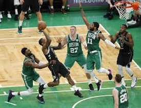
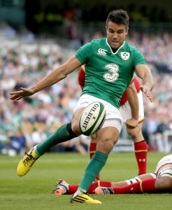

Sports
I first developed an interest in sports when was just a toddler.
The two sports I'm most interested in are Soccer and Basketball.
Soccer
- I first started playing soccer when I was 5 years old and haven't stopped since.
- I've played with multiple clubs, such as Mallow United and Buttevant FC.
- The team I support is Chelsea FC.
- I try to go see at least 1 Chelsea match per season in England.
- I also follow the Irish National Team as best as I can.
- James McClean would be my favourite Irish player, due to his tenacity and work ethic.
Basketball
- I first started playing basketball when I was 10 years old.
- I played Mallow Basketball Club until I was 16 years old.
- I switched between goalkeeper and centre back as positions, as I would get bored playing in one position for too long
- I've recently started playing again, albeit on a casual basis.
- I also follow the NBA quite a bit.
- The team I support in the NBA is the Boston Celtics.
- My favourite player would be Kyrie Irving, as he is one of the best finishers at the rim, and is very exciting to watch.


Rugby
- I first started playing rugby when I was 8 years old.
- I played on and off with Mallow RFC throughout my childhood
- Rugby was perhaps my favourite sport to play, however it caused me to get injured quite a bit
- I don't follow professional rugby as much as I would with soccer and basketball, but I do try to watch the odd game
- I do follow the Irish National Team, especially during the Six Nations and World Cup.
- Conor Murray is my favourite player, due to him being, in my opinion, the best scrum half in the world.

